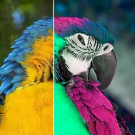

Kleurtoon & verzadiging

Draait kleuren rond de kleurencirkel en maakt ze sterker of zwakker; levendigheid versterkt vooral de doffere kleuren.
Kleurtoon draait elke kleur rond over de kleurencirkel (een hele draai is 360 graden). Verzadiging maakt kleuren sterker of zwakker: verlaag hem richting 0 om de kleur eruit te halen, of verhoog hem voor een krachtigere look. Levendigheid versterkt vooral de doffere kleuren, en Lichtheid maakt het beeld lichter of donkerder.
Animeer Kleurtoon om door alle kleuren van de regenboog te gaan. Voor zwart-wit zet je Verzadiging op 0.
Instellingen
| Instelling | Type | Bereik | Standaard |
|---|---|---|---|
| Kleurtoon | Hoek | -360° tot 360° | 60° |
| Verzadiging | Getal | 0 tot 3 | 1.4 |
| Levendigheid | Getal | -1 tot 1 | 0 |
| Lichtheid | Getal | -1 tot 1 | 0 |
| Stijl | Keuze | Klassiek, Helderheid behouden, Video | Klassiek |